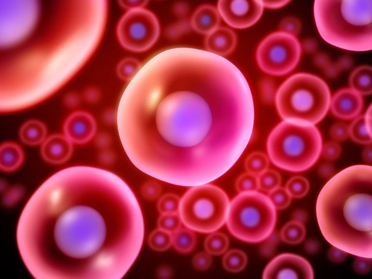

¿Que son las celulas?

1Definición:
En biología, es la unidad más pequeña que puede vivir por sí sola y que forma todos los organismos vivos y los tejidos del cuerpo. Las tres partes principales de la célula son la membrana celular, el núcleo y el citoplasma. La membrana celular rodea la célula y controla las sustancias que entran y salen. Dentro de la célula está el núcleo que contiene el nucléolo, la mayoría del ADN celular y es donde se elabora la mayor parte del ARN.
2Funciones
Le brindan estructura al cuerpo, absorben los nutrientes de los alimentos, convierten estos nutrientes en energía y realizan funciones especializadas. Las células también contienen el material hereditario del organismo y pueden hacer copias de sí mismas.